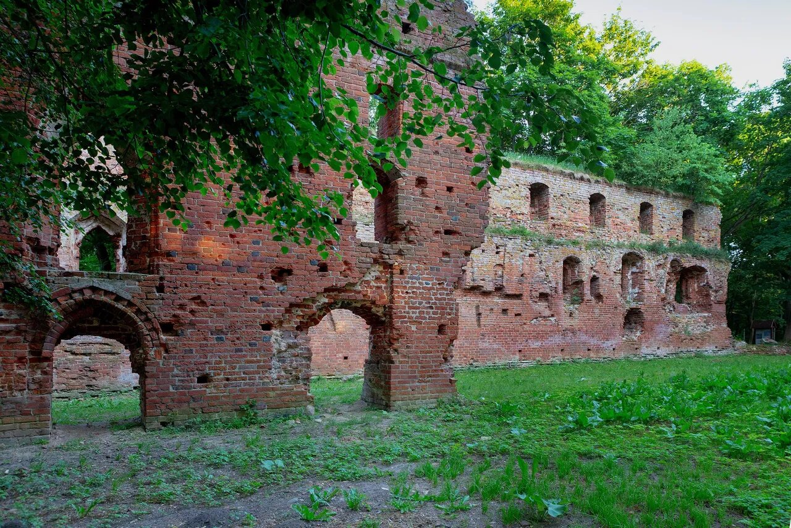
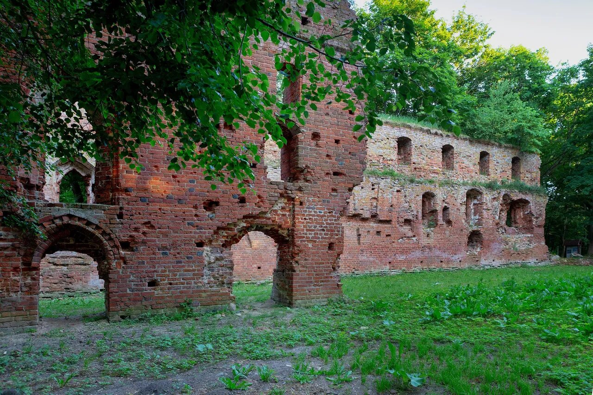

В Калининград с каждым годом приезжает все больше туристов.
Некоторые заглядывают только в центр и на остров Канта, а потом разочаровываются в городе, потому что
дольше дня здесь якобы нечего делать. Я родилась в Калининграде и прожила здесь 25 лет, столько же
влюблена в его тайные уголки и историю края. Точно знаю: здесь есть чем заняться. Например, местные
почти не ходят в Рыбную деревню , а в область уезжают дальше Зеленоградска.
Собрала неочевидные места региона, где любят бывать калининградцы. Сохраните текст в закладки, если
планируете приехать в город или если вы живете здесь и ищете новые впечатления. Все локации отметила на
карте:
1.Закхаймские ворота


Как и полагается воротам, Закхаймские изначально охраняли въезд в город, а после расширения Кенигсберга стали чем-то вроде триумфальной арки. К концу 19 века здание уже облепили дома местных жителей. Постройка сильно пострадала во время войны. Советские власти решать проблему не хотели — ворота заколотили и оставили пустовать на долгие годы, а позже приспособили под склад. Отреставрировали их совсем недавно. В 2013 году Закхаймские ворота отдали союзу калининградских фотохудожников. Совместно с ним группа независимых кураторов создала здесь арт-пространство и подарила сооружению вторую жизнь. Теперь здесь показывают Кубрика и Годара и проводят лекции по урбанистике. Калининградцы приходят сюда на открытие выставок или просто поработать.
2.Здание мукомольного завода


Исполин, от которого так и веет индустриализмом, расположился на правом берегу реки Преголи. Время в этом портовом районе города можно провести по-разному. Холодными вечерами можно любоваться промышленными видами, сидя в теплой машине с только что купленной выпечкой. Некоторые калининградцы прогуливаются сюда пешком и с причалов наблюдают за проходящими судами. Если присмотреться, можно увидеть знаменитый «Крузенштерн» — ходивший в кругосветки парусник пришвартован на другом берегу реки. В здании по соседству с мукомольным заводом работает кофейня «Элеватор». Горожане ценят ее не только за расположение, но и за фирменные профитроли.
3.Парк Победы


Продолжить прогулку вдоль Преголи можно в направлении Парка Победы. По пути вам попадется небольшое заведение Bravo Italia, где можно съесть что-нибудь из классики итальянской кухни: равиоли со шпинатом и рикоттой, карбонару или пиццу с пепперони. Пройдя дальше, рассмотрите заброшенный речной вокзал с пришвартованными судами и ремонтными доками. Отсюда открывается вид на двухъярусный мост — уникальное инженерное сооружение начала 20 века: чтобы пропустить корабли, центральная часть моста поворачивалась вокруг своей оси. В советское время конструкцию поменяли, и мост начал подниматься вверх. Теперь достопримечательность и вовсе сносят, чтобы возвести более современное сооружение. Вблизи шумной стройки и машин спрятался тихий парк. Раньше здесь проходили гуляния на 9 Мая, другие городские праздники и свадьбы, но теперь в Парке Победы почти никого нет. На залитых солнцем лужайках у пруда можно устроить пикник.
4.Ландшафтный парк


Парк спрятался за многоэтажками в самом центре города. Небольшой клочок земли вряд ли составит конкуренцию калининградскому ботсаду, но ему это и не нужно. На радость ценителям природных ландшафтов и биоразнообразия в «Юннатке» цветут магнолии, сакуры и другие фотогеничные виды. Место особенно прекрасно осенью. Убедиться в этом поможет специальный маршрут: от входа пройдите вверх по аллее, затем поверните налево — в увитую виноградом арку, через которую выйдете к пруду, где можно посидеть на лавочке. Захватите с собой бутерброды и термос — пахнущее шоколадом дерево неизменно вызывает желание перекусить. Вход в парк платный. Цена взрослого билета — 100 ₽.
5.Маяк Риндерорт


Калининградская область насчитывает с десяток маяков. Большая часть сегодня работает автономно, без смотрителей, остальные — заброшены. За Риндерорт же взялся Музей мирового океана и восстановил его своими силами — теперь место притягивает туристов. Особенно интересна небольшая смотровая площадка с прекрасным видом на Куршский залив. Маяк существует с 1908 года — лестницы в нем, как водилось у немцев, винтовые и до безумия крутые. Покорять вершину лучше в удобной обуви и теплой одежде — не в сезон круглый балкончик продувают балтийские ветра. Не прозевайте экскурсию по домику смотрителя, где гиды делятся историями об умирающей сегодня профессии. Работы по реставрации еще не закончены, так что место активно собирает пожертвования: скоро здесь откроется еще один музей и старинный причал.
6.Филинская бухта


Добраться до этого места легче всего на машине, но склоны бухты видали и любителей хайкинга . Пешую прогулку лучше начать от Светлогорска: туда из областного центра регулярно ходят электрички. Маршрут может занять около двух часов — не забудьте взять с собой перекус. С обрыва возле народной парковки открывается захватывающий вид на морскую гладь, бухта давно стала популярным фоном для аватарок у калининградцев. Спуск к пляжу крут и тернист — надевайте удобную обувь. С каждым годом насладиться нетронутой красотой Филинской бухтой и мыса Таран становится все сложнее из-за развернувшейся стройки. В ближайшие годы здесь появится детский лагерь, так что поторопитесь.
7.Замок Бальга

 

Бальгу принято считать старейшим замком тевтонцев на территории Калининградской области, ее построили в 1239 году. Место выбрали неслучайно: благодаря удачному расположению из крепости можно было контролировать выход к берегу залива. Во время войны Бальга стала последним оплотом немецкой обороны в регионе. Замок пострадал от советских артобстрелов — снаряды летели с Балтийской косы. Напоминанием о тяжелых боях стали остатки немецких танков и вагонов, которые еще долго выглядывали из водоемов возле руин. Мало что сохранилось и от замка: вековые своды, уцелевшие после обстрелов, растаскали на кирпичи. К сохранившейся внешней стене до сих пор приходят «черные копатели». Сегодня к заливу съезжаются, чтобы окунуться в дух Средневековья: послушать экскурсии, посмотреть на рыцарские турниры, прогуляться по замковым руинам. Здесь же можно попробовать традиционный персидский кофе и горячий самбийский кныш — жареную лепешку, которую издавна готовили местные народы.
8.Балтийская коса


Вблизи Балтийска десятки веков назад шторма намыли песчаный кусочек суши, который теперь разделяет Калининградский залив и Балтийское море. В самую западную точку России добираются по воде — на паромах и катерах из Балтийска. Первый обойдется в 70 ₽ за путь туда-обратно, а частники за билет в одну сторону берут 100 ₽. Когда-то здесь располагался немецкий аэродром гидросамолетов Нойтиф. До наших дней его инфраструктура дожила лишь частично: теперь калининградцы гуляют по взлетно-посадочной полосе, забираются на крыши высоких полуразрушенных ангаров и исследуют складские помещения, где когда-то хранились боеприпасы. У переправы вас встретят несколько домиков, велопрокат и три продуктовых магазина. Стоит заглянуть в музей Балтийской косы «Старый люнет» и на фестивальную площадку «Ржавый город» в постапокалиптическом стиле, где можно поесть, попариться в бане и даже заночевать. Альтернативный ночлег — глэмпинг Vikingood с гастробаром и домиками в форме буквы А на берегу моря.
9.Юдиттен-кирха


Юдиттен-кирху построили рыцари Тевтонского ордена в конце 13 века. А спустя сто лет этот образец аскетичной готической архитектуры стал популярным местом религиозных паломничеств. Странников привлекали яркие фрески с изображением «Страшного суда» и деревянная скульптура «Мадонна на полумесяце» — одна из древнейших в Пруссии. В войну кирха практически не пострадала. Вплоть до 1948 года оставшиеся в регионе немцы продолжали вести в ней службы. Но со временем здание все равно пришло в упадок: рухнула крыша, разваливалась верхняя часть башни, разрушились стены, а местные жители растаскивали средневековый кирпич на стройматериалы. К началу 1990-х кирха была полностью восстановлена — уже как православный храм и первый в области православный монастырь. Здание соседствует с тихим парком, в котором остались советские и немецкие захоронения. По его склонам приятно прогуляться в любое время года, но я рекомендую поздней осенью и зимой — под стать меланхолическому настроению.
10.Озеро Поплавок


Озеро спряталось между современными и историческими особняками. Один из них — вилла в японском стиле, построенная еще до Первой мировой. Здание пришло в запустение около 30 лет назад, но многие еще надеются на восстановление жемчужины Поплавка. На берегу находится и другое знаковое для региона место — генконсульство Польши. Когда-то перед его заборами выстраивались огромные очереди калининградцев, ездивших к соседям на выходные или просто за покупками. От шумного проспекта озеро отделяет всего один ряд домов, но место остается тихим и уютным в любое время года. Сюда приходят, чтобы провести время с семьей, устроить пикник, покормить плавающих птиц или просто почитать на скамейке.